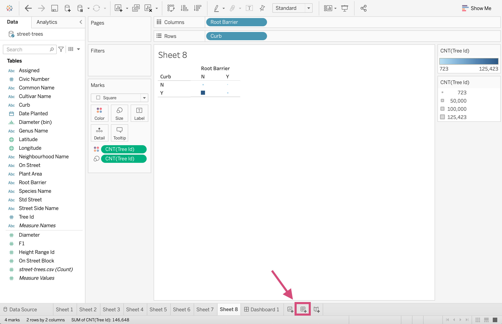
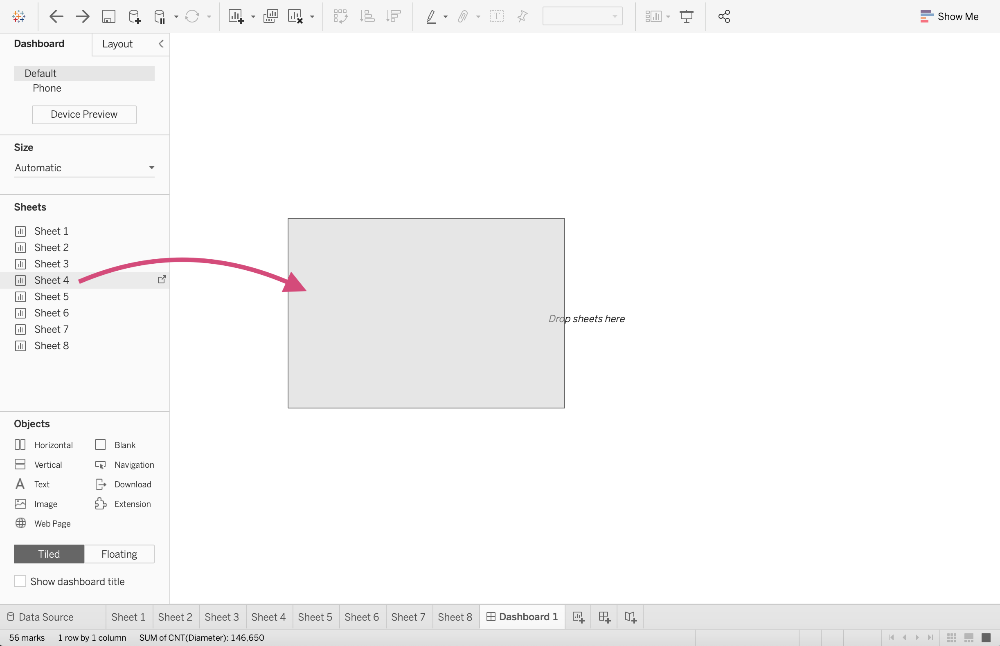
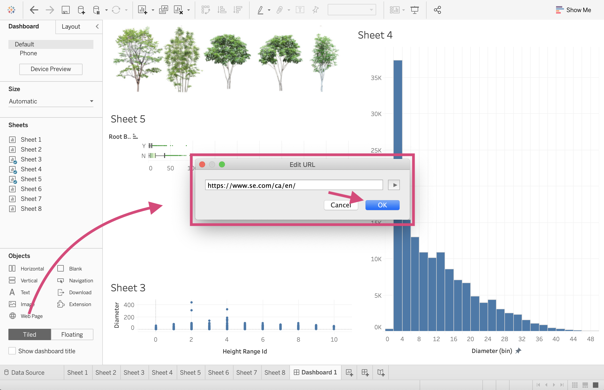
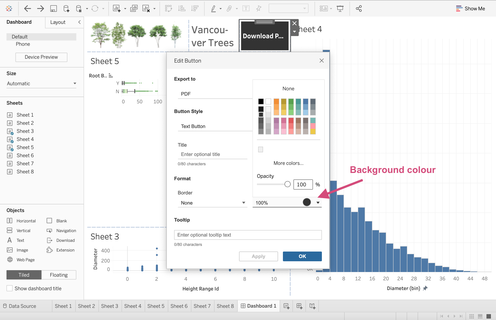
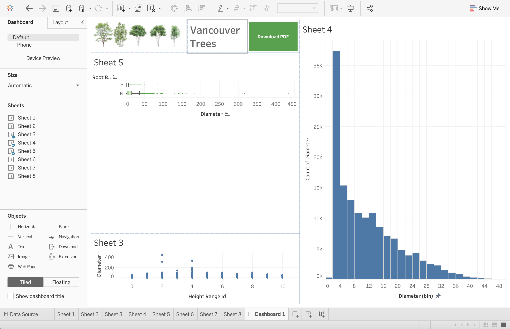
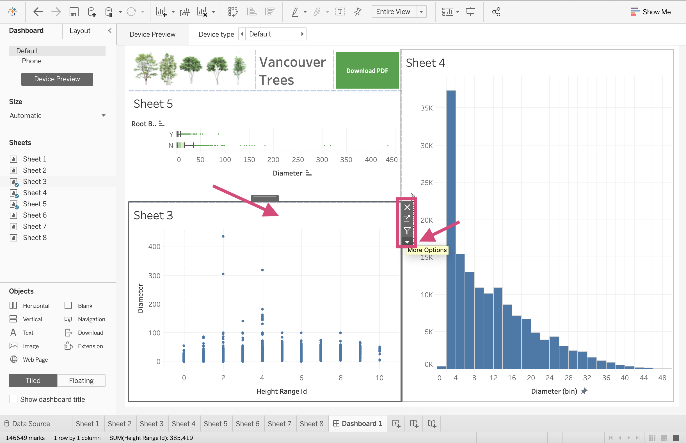
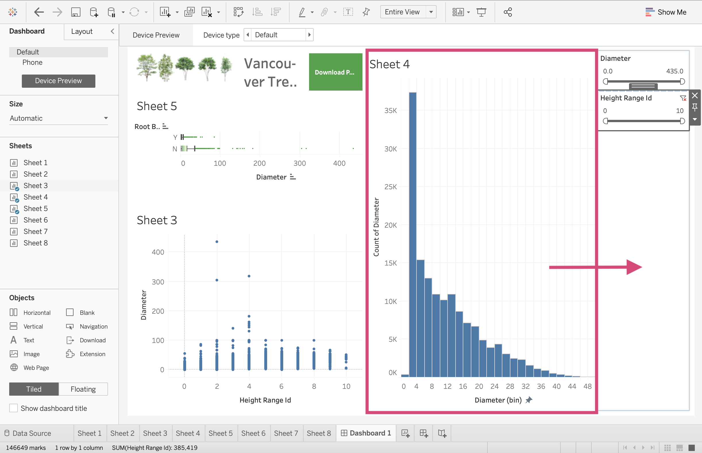
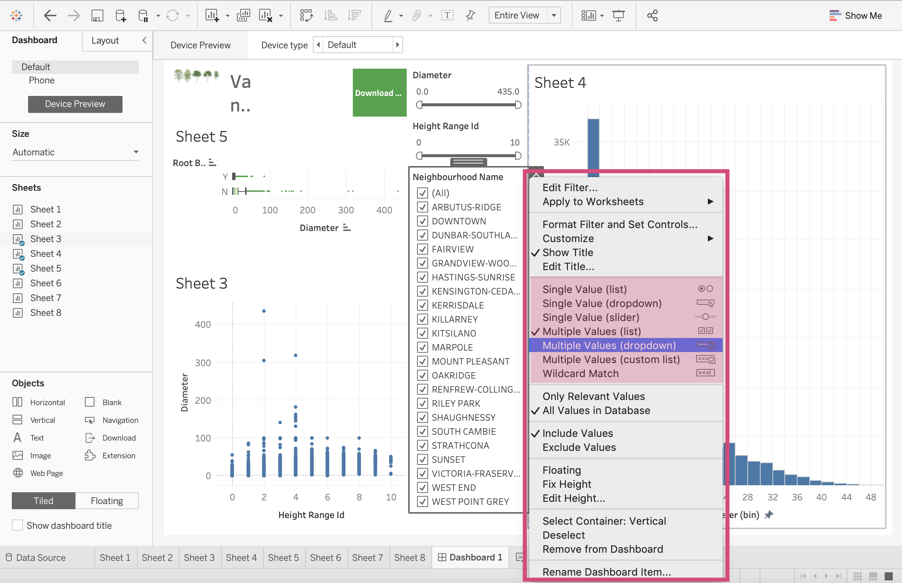

3. Dashboards¶
The moment we’ve all been waiting for! This is where we can take our visualizations from our worksheets, combine them into 1 page (or multiple) and add filters making them dynamic in nature.
Let’s begin by creating a new Dashboard.
1. Click on the Dashboard icon at the bottom of your workspace.
{kind=link}

Here we can display images, worksheets, filters and even website pages.
3.1. Workspace¶
Here we can examine the buttons are tools we will need to create our dashboards.

Size
It’s important that you select the size of the screen your dashboard is expected to be displayed on. The options are:
Fixed: The dashboard remains the same size no matter the screen used to display it. If the dashboard is bigger than the designated window, the dashboard will be scrollable.
Range: The dashboard scales between a minimum and a maximum size that you specify.
Automatic - This is what I generally suggest since the dashboard will automatically resize to fit the screen it’s displayed on. When using Automatic I also firmly suggest using a Tiled dashboard layout (explained below).


Sheets
Here is where we can select the plots we made on the worksheets and bring them together collectively on a dashboard.
All we have to do is drag the sheet to the visualization space.
{kind=link}

Tiled/Floating
3.1.1. Tiled example¶
You’ll notice that when we dragged these sheets they snapped into a position. This is creating tiles. I only recommend using this layout method when using the Automatic sizing option.

Tip!
When you drag sheets into the Dashboard, you can have them displayed in the standard view, or if you want the vizualization to take up more space in the boundaries, you can:
1. Click on the desired plot.
2. Select the More Options icon.
3. Under the Fit option, you can select “Entire View”
{kind=link}
And we can see the difference using our boxplot as an example.
{kind=link}
3.1.2. Floating example¶
If we instead used the floating option, we could place the plot anywhere but it can prove problematic when the screen size is fixed.

Objects
We are not restricted to only putting worksheets and graphs on our dashboard. We can also add images, webpages embedded in the sheets as well as Text boxes, downloading and navigation button options.
3.1.3. images¶
We can place images in our dashboards just as easily as we can sheets.
Step by Step Instructions
1. We first drag the Image option where we wish to place it in the dashboard.

2. We then must select our desired images from our file directory, here I’m using the trees.png file which I’ve also made available on my Google drive here.

3. I select the Fit Image option so that the image is fixed to the dimension of the dashboard tile.

And there you have it!

3.1.4. webpage¶
We can even embed complete working websites in our dashboards.
Step by Step Instructions
1. We drag the Web Page option to the dashboard and it will result in a popup asking for the desired page.
{kind=link}
And it’s as simple as that! We have the website active now!

3.1.5. Text¶
Adding text for titles or explanations (I’ve even added axis titles using this option when in a pinch) works the same as images and webpages. We can drag and then format our text.


3.1.6. Download¶
To create an option to download a static copy of your dashboard, you can add a button allowing the viewer to do so.
Step by Step Instructions
1. Like the other object, we drag the Download icon to the dashboard.

2. To format it, we need to double click and select the desired export or button type and format the font.

3. We can also adjust the background colour.
{kind=link}

{kind=link}
3.1.7. Navigation¶
There are may be times where on your dashboard you’d like to navigate to either a different dashboard or perhaps dive deeper into a worksheet. I needed this for my own dashboards when I had the list of customers pop up with certain filters and I wanted to navigate back to the main dashboard.
Step by Step Instructions
1.This can be down by dragging the Navigation icon onto the dashboard.

2. We don’t need to do this for our dashboard, but you can then select where this button will navigate you to.

3.1.8. Extensions¶
For certain additional actions and features, we can also add extensions that other people have made and shared publicly.
We will discuss this in the 4th lesson if we have time.
Device Preview
You can check and preview what your dashboard will look for other devices by clicking this Device Preview and scrolling through the options like Desktop, Tablet and Phone


3.2. Filtering¶
Here is where the fun starts! Since Tableau is an excellent tool to use for dynamic plots, let’s go ahead and see why first hand.
Step by Step Instructions
1. Click on the sheet you wish to filter. On the right side of the plot, you’ll see a More Options button.
{kind=link}
This will produce a dropdown where we want to select a field to filter on. Under Filters we can then select the columns displayed. These are currently the ones we are using in the plot already. We will show you how to filter on additional columns momentarily. For now, let’s select Diameter.

2. Selecting the field desired will then produce a filter!

3. Let’s add another. Let’s add the Height Range Id as a filter too.


I’m going to move the plot so that we can focus on the filters and see all the popups here.
{kind=link}
4. If we click on the filter we can then see a More Options icon.

This is where we can see all the filter style options.

Since both of these fields as measures, we can filter in the following ways:
Range of Values/Dates: This means you can filter the data to include or exclude more values. You can pick the minimum and maximum values.
At Least/Starting Date: This has a fixed maximum value and an open-ended minimum value that the user chooses.
At Most/Ending Date: This has a fixed minimum value with an open-ended maximum value that the user chooses.
For periods there, there are 2 more called Relative to Now and Browse periods where the values must be continuous.
5. In order to filter the graphs by other columns, we must add it to the Filters card on the Worksheet page of the plot.
Locate yourself to the appropriate sheet using the tab at the bottom. Select the column you wish to filter the plot on and drag it to the Filters card. Here we are going to drag the Neighbourhood Name column.

This will create a pop-up where we can select the categories and values we wish to include. I will be selecting All


6. We can then return to our dashboard, click on the plot and see that Neighbourhood Name has need added to the choice of filters.
{kind=link}
This produces a list of all the neighbourhoods now.

7. Clicking on this filter and selecting the More Option icon, you’ll see all the different filtering styles.
{kind=link}
Neighbourhood Name is a Dimension. Dimensions have the following possible filtering styles (Source: help.tableau.com):
Single Value (List): A full list of all the possible values of the filter as radio buttons but only 1 can be selected at a time.
Multiple Values (List): Shows all the values in the filter as a list of checkboxes where multiple values can be selected.
Single Value (Dropdown): Displays the values of the filter in a drop-down list where only a single value can be selected at a time.
Multiple Values(Dropdown): Displays the values of the filter in a drop-down list where multiple values can be selected.
Single Value (Slider): Displays the values of the filter along the range of a slider. Only a single value can be selected at a time. This option is useful for dimensions that have an implicit order such as dates.
Multiple Values (Custom List): Displays a text box where you can type a few characters and search for the value.
Wildcard Match: Displays a text box where you can type a few characters. All values that match those characters are automatically selected.
We are going to select the Multiple Values Dropdown

3.2.1. Filter All Sheets using Same Data Source¶
One of the great things about Tableau is now we can take the filter we made for one of our plots and use it for some of the other plots in our dashboard.
If we are using multiple sources that share columns, we can program our filter so that it’s applied to multiple worksheets.
Selecting All using Related Data Sources and now all the plots that have this field name will work with it.
In our case, we can use the All Using this Data Source option which will now filter all the worksheets using the street-trees.csv data file.
This is done by clicking the desired filter, and selecting the More options icon.
Under the dropdown menu, we can Apply to Worksheets and select All Using this Data Source.

Now when we use this filter and select no neighbourhoods (None), none of our graphs show up! This filter is now working for all our graphs.
{kind=link}
If we change the filter to Kitsilano, all our graphs are filtered accordingly now!
{kind=link}
If we only wanted this filter to only affect a few of the graphs, we can select the Selected Worksheets and then chose the worksheets we wish to depend on the filter.


3.2.2. Plots as Filters¶
Tableau also gives the option of using a graph itself as a filter. Here we will use our boxplot as a filter for the other two.
We can do this in 2 ways.
By using the funnel icon when we click the plot
Selecting it from the More Options menu.
{kind=link}
Now when we click on the Boxplot with Root Barrier = Y, our plots filter accordingly.

3.3. Publishing Dashboards¶
You can either publish your dashboard on your company’s Tableau server or using Tableau online.
I don’t have access to either of these so it makes it difficult to demonstrate this to you.
I can link you to this easy to follow step-by-step guide that walks you through the steps to publish your work.
You’ll also be able to publish your work on Tableau Public (If the data you are using is not sensitive and you are allowed to do so) which is where we saw some of the other dashboard examples.
Note that publishing to Tableau public is only recommended for personal projects using open source data.
3.4. Quick Quiz¶
True or False: Dimensions have more filtering style options than Measures.
If we want to filter on a field/column that isn’t used in the plot where must we make this adjustment, on the dashboard or on the plot’s corresponding worksheet?
Which of the following is not an option for Device Preview: Phone, Desktop, Embedded webpage, Tablet.
Which of the following file type is not an option to export your dashboard as with a Download object; PowerPoint, Crosstab, image, Word document?
Which layout type is recommended when choosing Automatic as a Dashboard size?
True or False: You can only have 1 dashboard tab for each file.
3.8. ¶
Joining